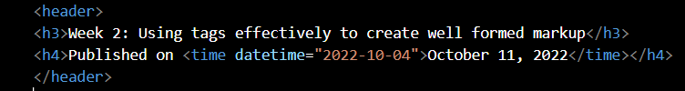

Week 4: Using CSS to change the style of the website
Published on
Finished third lab session in which I learnt how to approriately use HTML tags.
In this session I was also able to utlise these by incorporating them into my code.
Furthermore I was able to learn how to add publication dates and using the correct format within the code.
Some reference here to my own reading and research, explaining what I have done and what I have learned from it.
Week 3: Using nested lists within code and continuing to learn markup
Published on
Finished second lab session in which I learnt how to approriately use HTML tags.
In this session I was also able to utlise these by incorporating them into my code.
Furthermore I was able to learn how to add publication dates and using the correct format within the code.
HTML
Hyper-text markup language - markup language used to structure content
CSS
Cascading stylesheets - used to define presentation of HTML elements
JavaScript
Scripting language for adding interactive behaviour to web pages
Day/time
Monday
Tuesday
9-10am
CI435 lecture
10-11am
CI401 lecture
CI435 lab
Some reference here to my own reading and research, explaining what I have done and what I have learned from it.
Week 2: Using tags effectively to create well formed markup
Published on
Finished second lab session in which I learnt how to approriately use HTML tags.
In this session I was also able to utlise these by incorporating them into my code.
Furthermore I was able to learn how to add publication dates and using the correct format within the code.

Website folder structure
Some reference here to my own reading and research, explaining what I have done and what I have learned from it.
Week 1: Getting Started with Web Development
Published on
Finished first lab session learning how to create 3 basic pages and link them through menus using relative links.
I also was able to learn how to link external sites using absolute links and validate my html through a external html validator
Website folder structure
Some reference here to my own reading and research, explaining what I have done and what I have learned from it.
Week 2: Using tags effectively to create well formed markup
Published on
Finished second lab session in which I learnt how to approriately use HTML tags.
In this session I was also able to utlise these by incorporating them into my code.
Furthermore I was able to learn how to add publication dates and using the correct format within the code.
Website folder structure
Some reference here to my own reading and research, explaining what I have done and what I have learned from it.